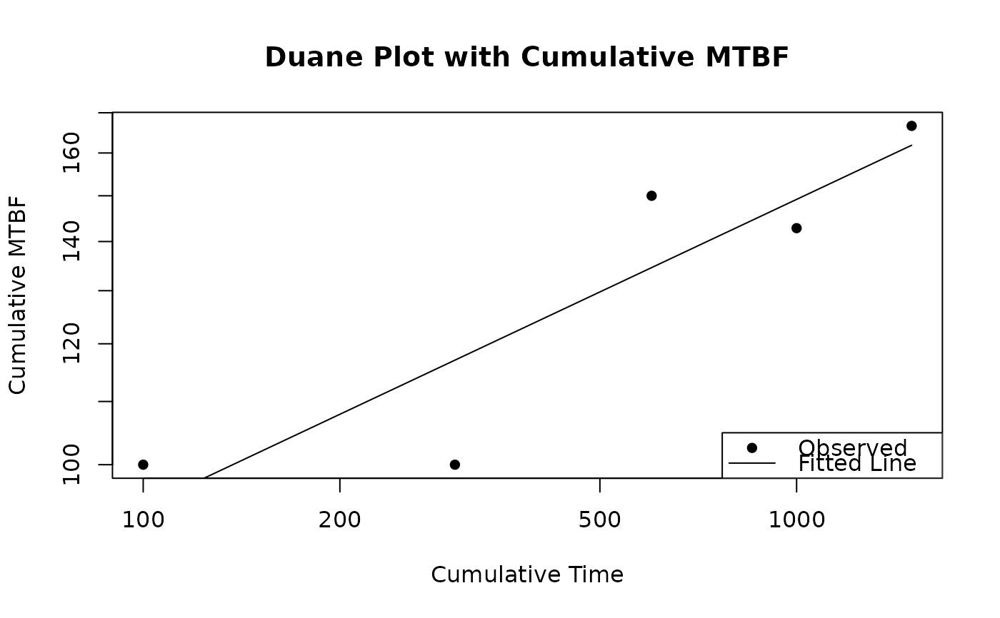

This function creates an interactive Duane plot for a duane object.
Usage
plotly_duane(
duane_obj,
showGrid = TRUE,
main = "Duane Plot",
xlab = "Cumulative Time",
ylab = "Cumulative MTBF",
pointCol = "black",
fitCol = "black",
gridCol = "lightgray"
)Examples
library(ReliaGrowR)
times<-c(100, 200, 300, 400, 500)
failures<-c(1, 2, 1, 3, 2)
fit<-duane_plot(times, failures)

plotly_duane(fit)